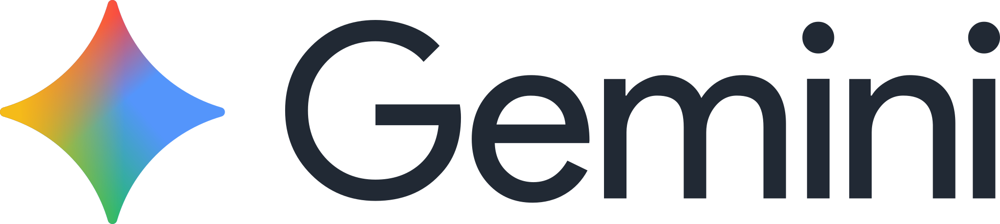

Banyak AI yang dapat dipakai untuk membantu kalian dalam bekerja diantaranya adalah:
Nah, Tapi ada satu catatan dari banyaknya AI yang dapat mempermudah hidup kita. Kita pun harus sadar bahwa kita memiliki otak yang lebih powerfull dari Kebanyak AI. Maka dari itu jangan jadikan AI patokan dalam hidup kita tapi jadikan AI pembantu yang dapat diandalkan untuk mempermudah pekerjaan kita sehari-hari. Jika kalian membutuhkan itu kalian bisa mengunjugi situs web resmi AI berikut: Chat GPT - Gemini - Claude.